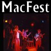

Play @ MacFEST 2001
Soul Harvest is asking for local talent to play at this years' MacFEST. There are only three spots, so get your demos in!!
The Bear will be running another contest on air for the other 3 spots available. Feel free to apply for both, and improve your odds!
Send your press kit to:
|  |
PLAY@MACFEST
c/o: Eric St-Cyr
Auto-wah Records
768 Lalande Terrace
Orleans, ON
K4A 2M3
|
- Deadline for submissions is July 1st. Winners will be notified July 9th.
- All applicants must be available to perform August 9th, 2001 at Barrymore's Music Hall in Ottawa, ON.
- All performers at MacFEST will be expected to provide their own equipment and cover their own costs. Performers will be informed of required equipment.
- Submitted promotional materials will not be returned.
|